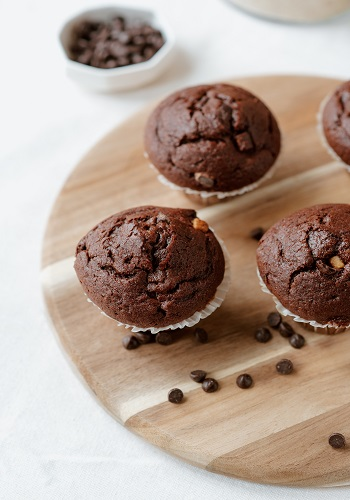

Receta de Muffins de chocolate
Unos muffins esponjosos y jugosos con intenso sabor a chocolate, perfectos para el desayuno o la merienda.Ingredientes
- Harina de trigo - 250 gr
- Cacao en polvo - 50 gr
- Azúcar - 150 gr
- Leche - 200 ml
- Huevos - 2 unidades
- Aceite vegetal - 100 ml
- Pepitas de chocolate - 100 gr
Elaboración
- Precalienta el horno a 180°C y prepara un molde con cápsulas para muffins.
- Mezcla en un bol la harina, el cacao y la levadura.
- En otro recipiente, bate los huevos con el azúcar, la leche y el aceite.
- Incorpora los ingredientes secos a los húmedos y mezcla sin sobrebatir. Añade las pepitas de chocolate.
- Rellena los moldes hasta 3/4 de su capacidad y hornea durante 18-22 minutos.
- Deja enfriar antes de servir.